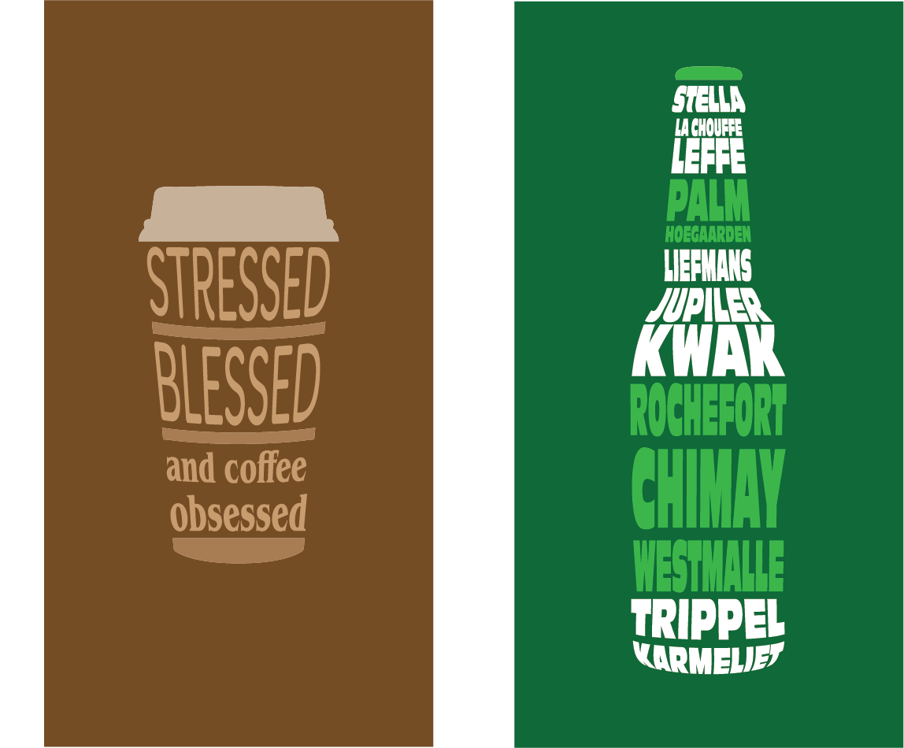

Visual Design & Art
Een collectie van mijn grafische werken, variërend van fotomanipulatie en vectorkunst tot complete user interfaces.
 Photoshop Creaties
Photoshop Creaties
Photoshop

Chihiro Lyric Poster
Experiment met diepte en typografie.
Photoshop

Work Smarter Campaign
Een promotionele visual met 3D smartphone-mockup. Focus op branding, frisse kleuren en een moderne, zakelijke uitstraling.
 Illustrator & Vector
Illustrator & Vector
Illustrator

Ornamental Typography
Een typografisch experiment met vectoren. De focus lag op het creëren van vloeiende, organische lijnen die het lettertype versterken.
Illustrator

Typographic Shapes
Een verkenning van 'shape packing' in Illustrator. De woorden vormen zelf de illustratie van het object dat ze beschrijven (een koffiebeker en een bierflesje).
 Figma UI/UX
Figma UI/UX
Figma

Banking App UI Kit
Compleet UI-design voor een bankieren-app, inclusief dashboard, transactie-flow en login-scherm, ontworpen in Figma.